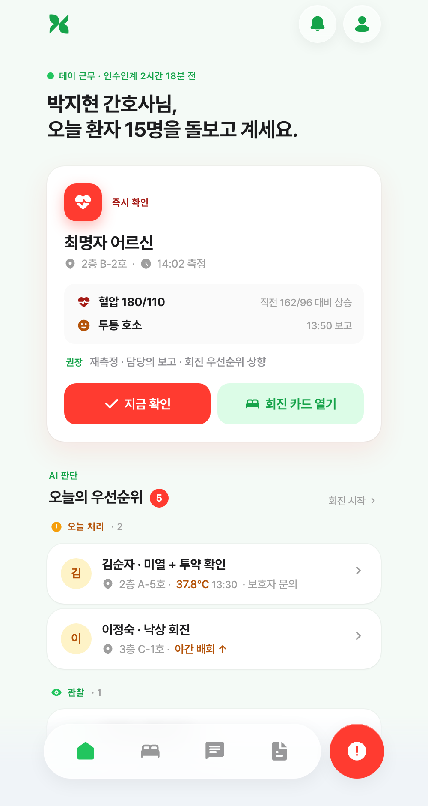

결정 · 2026-08-12 (인쇄 8/14)
의료진 화면 — 바꿀 것인가
읽지 말고 두 화면을 보세요. 오른쪽은 만든 그림이 아니라
준비해 둔 스크립트를 원본 사본에 돌려 실제로 찍은 화면입니다.
“바꾼다”를 고르면 이 화면이 그대로 나옵니다.
지금 — 8/14 인쇄물에 들어갈 상태
앱이 판단한다고 말하는 화면

즉시 확인 · AI 판단 · 오늘의 우선순위 5 · 권장 재측정 —
네 곳이 제안서 §05의 “판정은 만들지 않는다”와 정면으로 어긋난다.
A안 — 스크립트 적용 결과
사람이 적었다고 말하는 화면

정보는 그대로 있고 주체만 앱에서 사람으로 돌아왔다.
호실 셋과 체온 하나도 캐논에 맞췄다.
바뀌는 것 — 열다섯 군데
- 태그즉시 확인요양보호사 보고
- 근거직전 162/96 대비 상승13:50 요양보호사 기록
- 라벨AI 판단요양보호사 기록
- 목록오늘의 우선순위 5오늘 올라온 보고 5
- 권고권장 · 재측정 · 회진 우선순위 상향메모 · “재측정 부탁드립니다” — 이수진 요양보호사
- 분류오늘 처리 · 관찰확인 전 · 확인함
- 호실최명자 B-2 · 김순자 A-5 · 이정숙 3층 C-1B-1 · B-2 · 2층 A-7
- 체온37.8°C 가 김순자에게37.4°C 가 이정숙에게
왜 지금인가
부스에서 이 한 마디로 무너진다
- 상대“AI가 위험한 환자를 골라 주는 건가요?”
- 우리“아니요, 판단은 하지 않습니다. 의료기기가 되기 때문에 일부러 뺐습니다.”
- 상대(화면을 보며) “여기 ‘AI 판단’이라고 써 있는데요.”
숫자를 그렇게 조심해 놓고 화면에서 무너지면 아무 의미가 없다
제안서에서 수치를 하나하나 검증해 온 이유가 정확히 이 순간 때문입니다.
화면은 haruanbu.site 에 이미 배포돼 있어 부스에서 폰으로 열어 보여줄 것도 이 화면입니다.
종이에서만 빼는 것은 해결이 아닙니다.
덤으로 찾은 것 — 체온이 세 화면에서 달랐다
화면을 찍어 보다가 나왔습니다. 원고를 아무리 읽어도 안 보이는 종류입니다.
- 요양보호사인수인계 “체온 36.9℃ 미열”36.9℃는 미열이 아니다 — 정상 체온
- 요양보호사관찰 카드·소통·en·zh 등 아홉 곳 모두 37.4℃
- 의료진37.8°C · 김순자이 화면에만 있는 값 · 사람도 다르다
그래서 37.4℃ 로 맞춘다 — 지어낸 값이 아니다
같은 앱의 소통 화면이 “체온 37.4°C — 평소보다 0.8도 높음”이라고 적고 있습니다.
평소 36.6 + 0.8 = 37.4. 산수까지 맞는 쪽이 37.4이고, 36.9와 37.8은 각각 한 곳씩입니다.
A안 스크립트가 의료진 화면을 고치고, 요양보호사 인수인계 한 줄은 별도 스크립트로 준비해 뒀습니다.
고르기
A안 — 전부 적용 (권장)
문구 + 호실 + 체온. 제안서 §05를 그대로 지킬 수 있고, 부스에서 화면을 가리키며 설명할 수 있습니다.
의료진 앱이 덜 똑똑해 보이지만 그게 사실입니다 — 서버도 AI도 아직 없습니다.
호실·체온만
틀린 것만 고치고 SaMD 문구는 그대로 둡니다. 판단이 필요 없는 부분입니다.
다만 위 대화는 그대로 일어납니다.
B안 — 그대로 두기
§05의 SaMD 주장을 뺍니다. 짧은제안서 5쪽 한 면과 2부 16쪽의 뼈대가 사라지고
“화면 잘 만든 학생팀”이 남습니다. 권장하지 않습니다.
고른 뒤 — 사람이 할 것은 한 줄, 나머지는 이어서 처리합니다
python3 _작업파일/의료진화면_수정.py (호실·체온만은 --호실만)
→ 무결성·디자인 검사 → 스크린샷 재촬영 → shot_doctor.png 교체 → 인쇄물 PDF 재생성.
인쇄물에 들어가는 것은 화면이 아니라 PNG 입니다. 재촬영을 빠뜨리면 아무것도 바뀌지 않습니다.